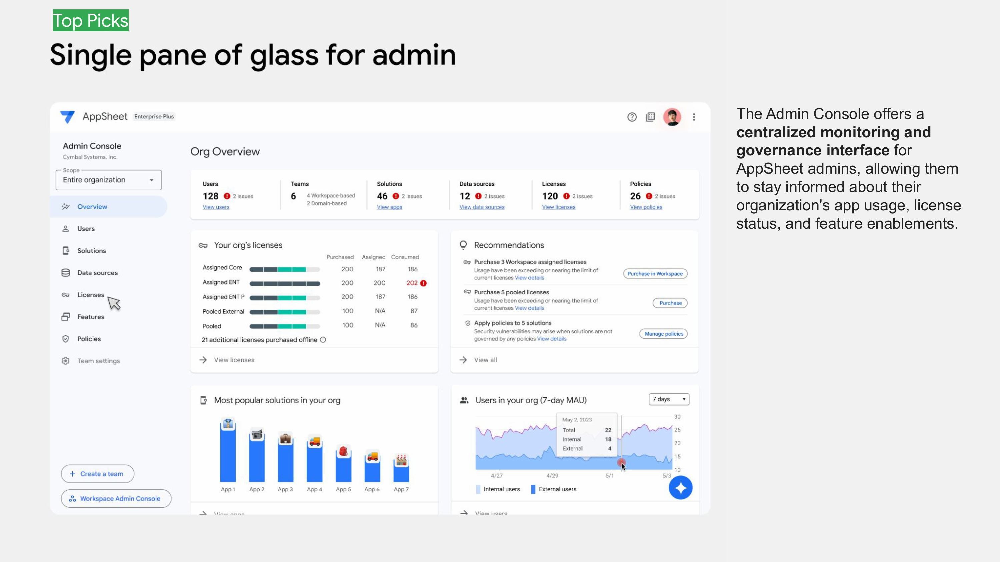

The ambiguity
The situation
AppSheet is a no-code platform Google acquired in 2020, and it was in the middle of a big shift: from a tool for technical builders to one any business user could use. It had a large, complex surface, with an app editor, admin console, automation, a database and AI app creation, and none of Google’s standard design systems to lean on.
What it didn’t have was a long-term UX direction. Engineering leadership wanted to think about the platform long-term. Product was planning feature by feature and was split on whether a long-term vision was worth the time. The UX team I inherited was struggling, and its relationship with engineering was strained.
Build the team first
Leadership
You can’t co-create a vision without the right people in the room. I made the hard calls, including managing out underperformers, and invested in the people who were ready to grow.
Then, when the moment was right, I made the hire that made everything else possible: a staff-level designer from another Google team to be my thought partner. At the time I was the only person on the team with room to think long-term. I needed someone who could turn the thinking into design and build relationships day to day, so I could focus on influencing leadership. He became the lead designer of the vision.
“Shira inherited a UX team that was struggling with both underperforming members and a historically challenging relationship with the engineering team… Shira’s individual skill and her leadership of the team transformed the relationship with Eng/PM. We now see UX/UXR as trusted and strategic partners for both long term vision, annual planning and for each feature we launch.”
Tomas, L8 Engineering Leader, Google AppSheetA process designed for ownership
Participatory design
The most senior product leader wasn’t a champion of long-term platform design. I knew a beautiful vision built in isolation would mean fighting for every piece of it later. So I designed the process to make the vision something product and engineering already owned by the time it reached leadership.
I wrote the vision brief and ran cross-functional workshops: How Might We brainstorming, hero scenarios, concept mapping and critique. We pulled ideas from UX, product and engineering, then gave everything one consistent, polished look. If enough people were invested, leadership would follow. That was the bet.

Proving customers wanted it
Concept testing
Opinions weren’t going to settle the debate, so we used research. At Google Cloud NEXT ’24, we tested the vision concepts with enterprise customers and partners, including Airbus and Globe Telecom, and asked them to rank what mattered most. Their top picks gave us the evidence to propose priorities.



From vision to roadmap
Influence
A vision only matters if it shows up in planning. AppSheet planned twice a year, and my job was to influence every cycle: bringing the customer evidence, proposing which concepts should come next, and making sure the whole team kept pushing for them. Top-down and bottom-up at the same time. Vision projects started landing on the roadmap.
EQ Week: shipping what the roadmap couldn’t fund
The idea I’m proudest of
Even with a vision on the roadmap, official prioritization only had room for so much. So I created EQ Week: a week twice a year when engineers, PMs and designers could form cross-functional teams and build the ideas that weren’t getting funded, then demo them and vote.
It ran for two and a half years. A typical EQ Week brought together 35+ people and produced 18 projects in a single week; in one, 7 advanced to the roadmap and 6 shipped. Some of AppSheet’s AI features were born there. Others got the push they needed to improve after launch. These started at EQ Week:
- GenAI for Admins
- Autocomplete in AppSheet Database
- App image mark-up
One idea, start to finish: AI for admins. AppSheet admins manage thousands of apps and often can’t tell what an app does or whether it’s risky. Google Cloud’s CEO had called AI for admins a “blue ocean.” I wrote the UX brief and led the early exploration with a designer, a PM and an engineering lead. An EQ Week team then built it, and it shipped as AI app summaries, governance recommendations and usage insights for admins.
- The briefI wrote the UX brief: admin pain points, scenarios, and a plan to prototype and test.
- EQ WeekA cross-functional team built “Gen AI has arrived for admins” in one week.
- RoadmapIt earned its place in official planning.
- LaunchAI-generated app summaries, governance recommendations, license gap alerts and usage insights.

What my team shipped
Results
AppSheet in Google Chat
Setup from 30 minutes to one. 10,800 customer dev hours saved a year, 1,100+ domains in the first month. Cloud Tech Impact Award.
AppSheet Database
28-day monthly users, plus 39% more editors year over year. Cloud Tech Impact Award.
Gemini app creation & Visual Editor
App creator success, with a 12% uplift in paid Workspace users.
Admin Console & EU expansion
EU enterprise monthly users, across 35 organizations. The launch helped win a 27,000-license deal with Vertiv, which moved to AppSheet from Smartsheet.
For context: AppSheet’s monthly users nearly quadrupled while I led UX, with 40%+ growth year over year. That came from many launches and many teams.
What I learned
Reflection
What worked
- Hiring a thought partner before starting the vision.
- Co-creating with product and engineering, so they championed what they helped shape.
- Testing with real customers before roadmap planning, which made the case for us.
- EQ Week gave the team a way to innovate without waiting for permission.
What I’d do differently
- Tie vision concepts to OKRs from the start. Agreeing on how we’d measure success earlier would have sped up adoption.
- Protect experience quality on the features we did ship. On a small team, something had to give. With AI Verbs it was the experience, and users needed hand-holding to succeed.
- Set a regular cadence for updating stakeholders, to keep momentum between milestones.